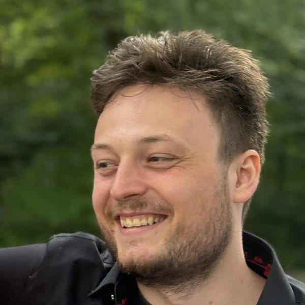

Nejc Ševerkar
Mathematician, developer, and infrastructure provider

About
I hold a Bachelor's degree in Financial Mathematics and a Master's degree in Pure Mathematics, both from the Faculty of Mathematics and Physics, University of Ljubljana.
Besides my contract work at Flare, I run StakeCore, an infrastructure provider for decentralized protocols, through my company Sarisoma d.o.o.
My interests include cryptography, networking, decentralization, communication protocols and website design.
Experience
-
2026
-
Quality assurance at Flare
Took over quality assurance on Flare, with the goal of modernizing test automation using LLMs.
- 2026 – present
- Flare
-
-
2025
-
FAssets audit competition
Led triage of the Immunefi audit competition for FAssets v1.1 and its Core Vault.
- May – June 2025
- Immunefi
- Competition
-
Founded StakeCore
Running validator and protocol signing services on Flare, Avalanche and Songbird.
- 2025 – present
- Sarisoma d.o.o.
- stakecore.org
- GitHub
-
-
2024
-
FAssets bug bounty
Led triage of the FAssets bug bounty program on Immunefi.
- 2024
- Immunefi
- Announcement
-
FAssets open beta
Led the open beta testing of the FAssets protocol on Flare's Coston2 testnet.
- June 2024
- Coston2
- Announcement
-
FAsset indexer
Web3 indexing and API development for the FAssets protocol.
- June 2024 – present
- TypeScript
- GitHub
-
-
2023
-
FAsset bots
Web3 client development for the FAssets system. Development has since moved to a private repository.
- August 2023 – 2024
- TypeScript
- GitHub
-
FAssets collateral pool
Developed the collateral pool smart contracts for Flare's FAssets bridge.
- 2023
- Solidity
- GitHub
-
Master's degree in Pure Mathematics
Thesis: Zero-knowledge proofs and their usage in decentralized systems.
- 2023
- Faculty of Mathematics and Physics, University of Ljubljana
- Thesis
-
-
2022
-
Flare stake tool
Developed the first user interface for staking on Flare.
- August 2022 – 2023
- TypeScript
- GitHub
-
-
2020
-
Bachelor's degree in Financial Mathematics
Thesis: The Mandelbrot set and the DEM algorithm.
- 2020
- Faculty of Mathematics and Physics, University of Ljubljana
- Thesis
-